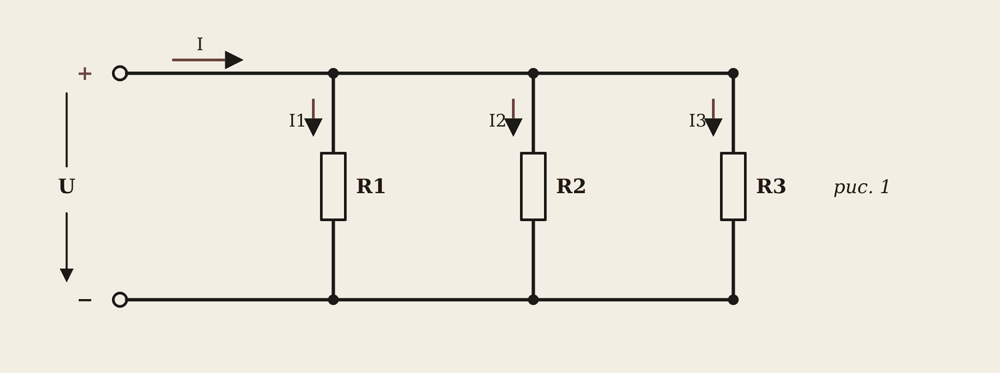
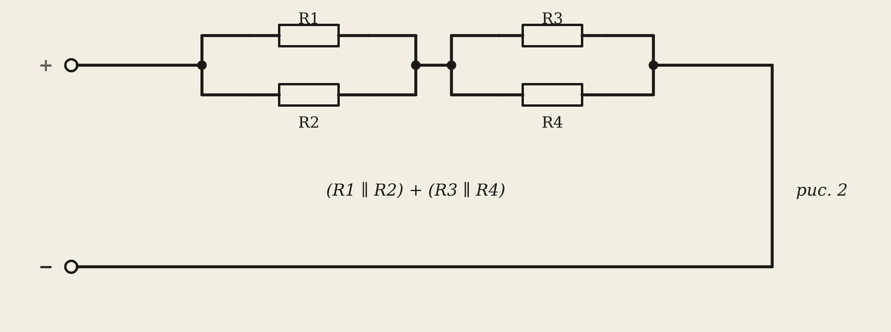
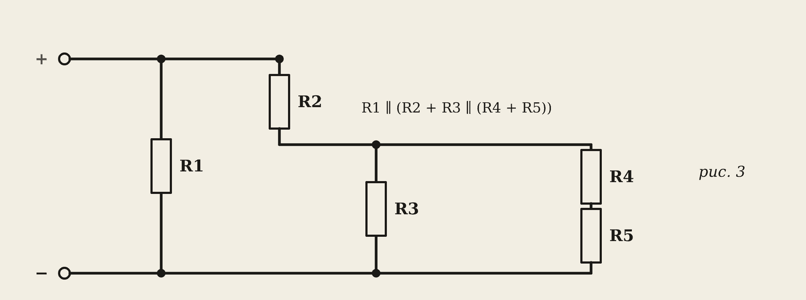
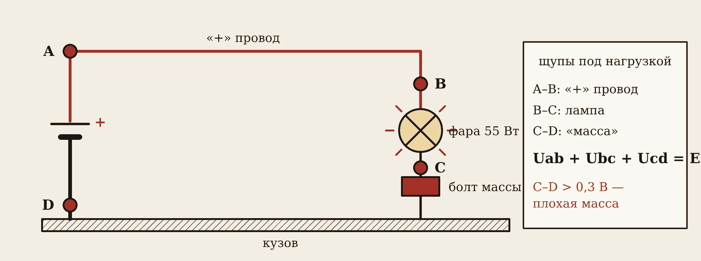

1. Задания и оформление
Четыре задачи за пару. Варианты 1–26 — в таблицах методических указаний (и в бланке), 27 — пример решения, 28–30 — дополнительные.
| Задача | Схема | Найти |
|---|---|---|
| 1 | R1, R2, R3 параллельно (рис. 1) | Rэк, I, I1, I2, I3 |
| 2 | (R1 ∥ R2) + (R3 ∥ R4) (рис. 2) | Rэк, I, I1–I4 |
| 3 | R1 ∥ (R2 + R3 ∥ (R4 + R5)) (рис. 3) | Rэк, I, I1–I4 |
| 4 | Цепь фары с плохой массой | I, падения напряжения, мощность фары |
Запомните
Как оформить каждую задачу: номер задания и варианта → схема (перерисовать) → Дано → Решение по шагам (Rэк, общий ток, напряжения участков, токи ветвей) → Проверка первым законом Кирхгофа → Ответы с единицами.
Критерии: «5» — все три задачи верно и аккуратно; «4» — две полностью, в третьей незначительные ошибки; «3» — одна полностью. Задача 4 — дополнительно.
2. Задача 1: три резистора параллельно

Вариант 27: R1 = 5, R2 = 10, R3 = 15 Ом, U = 110 В.
1 / Rэк = 1/5 + 1/10 + 1/15 = 6/30 + 3/30 + 2/30 = 11/30 → Rэк = 30 / 11 = 2,73 Ом.
I = 110 / 2,73 = 40,3 А. I1 = 110 / 5 = 22 А; I2 = 110 / 10 = 11 А; I3 = 110 / 15 = 7,33 А.
Проверка: 22 + 11 + 7,33 = 40,33 А = I. Верно.
3. Задача 2: два параллельных участка последовательно

Вариант 27: R1 = 20, R2 = 15, R3 = 10, R4 = 5 Ом, U = 240 В.
R′ = 20 · 15 / 35 = 8,57 Ом; R″ = 10 · 5 / 15 = 3,33 Ом; Rэк = 8,57 + 3,33 = 11,90 Ом.
I = 240 / 11,90 = 20,16 А. U′ = 20,16 · 8,57 = 172,8 В; U″ = 20,16 · 3,33 = 67,2 В.
I1 = 172,8 / 20 = 8,64 А; I2 = 172,8 / 15 = 11,52 А; I3 = 67,2 / 10 = 6,72 А; I4 = 67,2 / 5 = 13,44 А.
Проверка: I1 + I2 = 20,16 А; I3 + I4 = 20,16 А. Верно.
4. Задача 3: сворачиваем изнутри наружу

Вариант 27: R1 = 4, R2 = 6, R3 = 8, R4 = 10, R5 = 14 Ом, U = 240 В.
- Самое глубокое: R4 + R5 = 24 Ом; параллельно с R3: R″ = 8 · 24 / 32 = 6 Ом.
- С R2 последовательно: R′ = 6 + 6 = 12 Ом.
- С R1 параллельно: Rэк = 4 · 12 / 16 = 3 Ом. I = 240 / 3 = 80 А.
- I1 = 240 / 4 = 60 А; I2 = 240 / 12 = 20 А; напряжение на R″: 20 · 6 = 120 В; I3 = 120 / 8 = 15 А; I4 = 120 / 24 = 5 А.
Проверка: I1 + I2 = 80 А = I; I3 + I4 = 20 А = I2. Верно.
5. Задача 4: плохая масса

Второй закон Кирхгофа: пройдите от «+» источника до «−» — сумма падений напряжения на всех участках равна ЭДС. На этом построен поиск плохих контактов: где падение больше нормы, там и плохой контакт.
Условие: АКБ 12,6 В, «+» провод 0,05 Ом, фара 2,6 Ом, масса Rм — по варианту (0,02; 0,05; 0,1; 0,15; 0,2; 0,3 Ом — по остатку от деления N на 6: 0, 1, 2, 3, 4, 5).
Вариант 4: Rм = 0,20 Ом.
I = 12,6 / (0,05 + 2,6 + 0,2) = 12,6 / 2,85 = 4,42 А.
Uab (провод) = 4,42 · 0,05 = 0,22 В; Ubc (фара) = 4,42 · 2,6 = 11,49 В; Ucd (масса) = 4,42 · 0,2 = 0,88 В.
Проверка: 0,22 + 11,49 + 0,88 = 12,6 В. Pфары = 4,42² · 2,6 ≈ 50,8 Вт вместо 55.
Вывод: падение на массе 0,88 В больше 0,3 В — масса плохая, болт почистить и затянуть.
Запомните
Как проверить массу на машине: включить фару (под нагрузкой!), красный щуп вольтметра — на корпус или болт массы фары, чёрный — на «минус» АКБ. Больше 0,2–0,3 В — чистить. Если на массе почти 0 В, а лампа тусклая — искать в «плюсовом» проводе, предохранителе, разъёмах и выключателе.
6. Проверка в лаборатории и домашнее задание
В лаборатории «Бортовая сеть», вкладка «Плохая масса»: впишите вариант, поставьте щупы на A–B, B–C, C–D, сверьте со своим расчётом и введите падение на массе — «Проверить». Кнопка «Почистить и затянуть массу» покажет, на сколько выросла мощность фары.
Дома: досчитать задачи 1–3, оформить по образцу; задача 4 — с выводом. Т9 в тетрадь. Тема 1.2 закончена — проверьте страницы Т1–Т10.
Словарик
- Rэк — эквивалентное сопротивление цепи.
- Узел — точка соединения трёх и более ветвей.
- Падение напряжения — U = I · R на участке цепи.
- Плохая масса — окисленный или ослабленный контакт кузова, на нём теряется напряжение.
Эталоны в тетрадь
Перепишите в тетрадь по билетам — каждый эталон на отдельную страницу, с рисунком и строкой «Мой пример».
Законы Кирхгофа
Первый и второй законы Кирхгофа. Поиск «плохой массы» и окисленного контакта методом падения напряжения.
- Первый закон: сумма токов, втекающих в узел, равна сумме вытекающих: ΣIвх = ΣIвых.
- Второй закон: в замкнутом контуре сумма ЭДС равна сумме падений напряжения: ΣE = ΣI·R.
- Пример узла: от предохранителя 18 А = 9,2 А (фары) + 6 А (обогрев сидений) + 2,8 А (третья ветвь).
- Пример контура: 12,4 В АКБ = падение на «плюсовом» проводе + на лампе + на «массе». Если лампе досталось 10 В, где-то потерялось 2,4 В.
- Поиск плохой массы: нагрузка включена, вольтметр между «минусом» АКБ и корпусом потребителя. Больше 0,2–0,3 В — чистить и затягивать контакт «массы».
Проверь себя
Сначала ответьте сами — в тетради или вслух. Потом нажмите на вопрос, чтобы увидеть ответ.
1Два резистора по 10 Ом параллельно и 5 Ом последовательно с ними. Rэк?
10 · 10 / 20 + 5 = 5 + 5 = 10 Ом.
2В узел втекает 18 А, вытекает 9,2 А и 6 А. Сколько в третьей ветви?
18 − 9,2 − 6 = 2,8 А.
3АКБ 12,6 В, на лампе 11,8 В, на проводе 0,3 В. Сколько на массе и какая она?
12,6 − 11,8 − 0,3 = 0,5 В — больше 0,3 В, масса плохая.
4На массе почти 0 В, а лампа тусклая. Где искать?
В «плюсовой» цепи: провод, предохранитель, разъёмы, выключатель.
5В каком порядке сворачивают сложную цепь?
Изнутри наружу: сначала самые глубокие группы, потом последовательные с ними, потом параллельные.
Попробуйте в лаборатории
Откройте на телефоне или компьютере — ничего устанавливать не нужно.
Ответы к «Проверь себя»
- 10 · 10 / 20 + 5 = 5 + 5 = 10 Ом.
- 18 − 9,2 − 6 = 2,8 А.
- 12,6 − 11,8 − 0,3 = 0,5 В — больше 0,3 В, масса плохая.
- В «плюсовой» цепи: провод, предохранитель, разъёмы, выключатель.
- Изнутри наружу: сначала самые глубокие группы, потом последовательные с ними, потом параллельные.